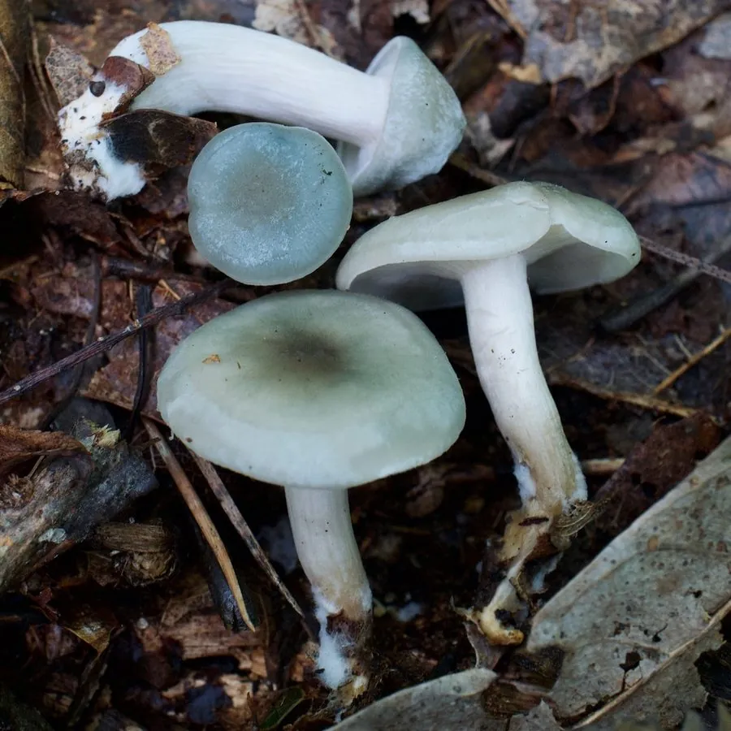

真菌 · 真菌界
香杯伞 Clitocybe odora

口蘑科蘑菇，菌盖淡蓝绿色、散发强烈茴香气味，夏秋生于阔叶林落叶层，气味独特但采食需极谨慎。
- 分类
- 门担子菌门纲伞菌纲目伞菌目科口蘑科属杯伞属
- 栖息环境
- 阔叶林与混交林落叶层上，夏秋成小群发生
- 地理分布
- 北半球温带阔叶林分布，中国东北、西南及欧洲、北美有记录
- 保护级别
- 暂无评估；种群较稳定
物种志
香杯伞的子实体中等，菌盖直径 3–8 厘米，初期凸起，后平展至中央下凹，表面淡蓝绿至灰绿色，幼时颜色较深、覆有白霜，边缘内卷。菌肉白色，薄，气味强烈似茴香。菌褶淡绿至乳白色，较密，直生至延生。菌柄长 3–7 厘米，直径 0.5–1 厘米，淡绿白色，基部有白色菌丝。孢子印白色。
香杯伞生于阔叶林或针阔混交林的落叶层上，夏秋 7–10 月发生，常成小群。它因强烈的茴香（八角）气味而容易辨认，在部分欧洲国家被少量用作调味，但杯伞属中混有含毒蕈碱的剧毒种类（如白霜杯伞），二者气味、颜色相近，误判风险很高。因此不建议初学者采食，若采食必须由专业人员确认，并彻底煮熟、少量试食。
形态与习性
- 菌盖直径 3–8 厘米，淡蓝绿至灰绿色，覆白霜
- 菌柄长 3–7 厘米，淡绿白色，基部有白菌丝
- 孢子印白色，孢子椭圆形
- 生境阔叶林落叶层，夏秋 7–10 月成小群
- 气味强烈茴香（八角）气味，是主要辨识特征
- 毒性同属白霜杯伞剧毒，二者易混，采食需极谨慎
趣味知识
- 香杯伞闻起来像八角，这股茴香气味来自其中的茴香醛类化合物。
- 它的蓝绿色菌盖在蘑菇中并不多见，幼时表面还覆一层白霜。
- 危险在于杯伞属里有含毒蕈碱的白霜杯伞，误食可致流涎、呕吐甚至呼吸困难。
- 即便确认是香杯伞，也应少量、煮熟食用，绝不生食。